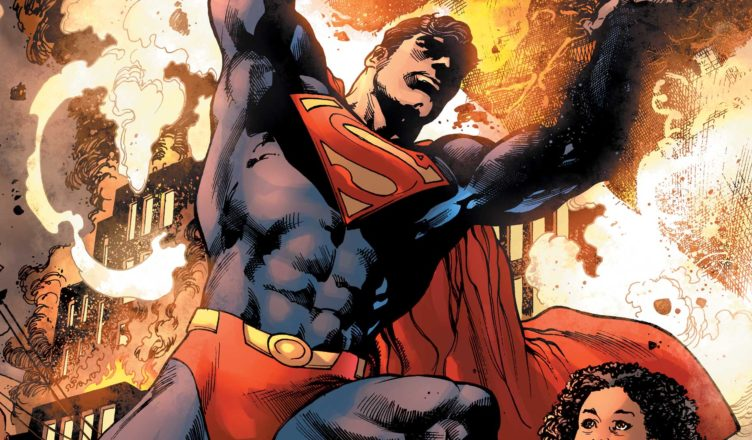

Bohater
Bohater
Najczęściej jest to bohater fikcyjny występujący w literaturze fantasy, ale nie tylko. Bohater ten wyróżnia się cechami niespotykanymi u ludzi: za sprawą jakiegoś przedmiotu lub przemiany zyskuje niezwykłe zdolności.Za pierwsze postacie fantastyczne występujące w dziejach można uznać bohaterów wywodzących się z mitologii oraz Biblii. Byli oni przedstawiani różnorako, np. Minotaur jako pół człowiek, pół byk, a Dedal mający niezwykły umysł, który był zdolny do lotu w przestworzach. Byli to bohaterowie stworzeni na początku dziejów dla wyjaśnienia najróżniejszych zjawisk występujących w przyrodzie.
